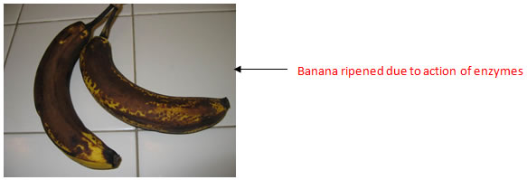
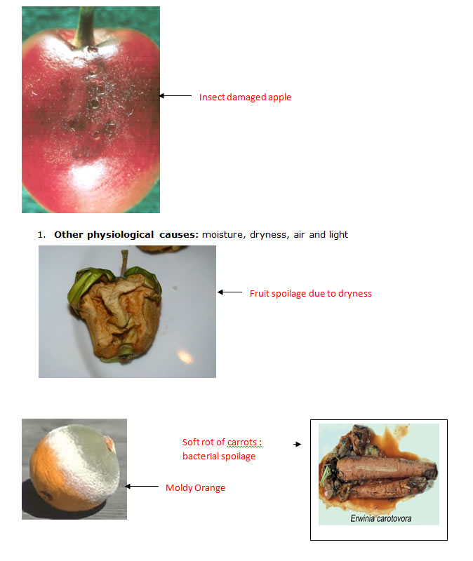

AMBE 101 :: Lecture 22 :: MICROBIOLOGY OF FOOD: MICROBIAL SPOILAGE

MICROBIAL SPOILAGE OF FRESH FOOD
Food is said to be spoilt if there is rotting i.e., bad smell, fermentation ie, bubbles/gas in the food or mold ie, spongy growth on the food stuff. Formation of soft spots or soft brown spots on fruits and vegetables is also food spoilage. Foods get spoilt mainly due to the presence of micro organisms, enzymes (present in foods), insects, worms, and rats.
1. Presence of micro-organisms: Micro-organisms spoil food items when the condition for their growth is ambient. Like all living beings micro-organisms require air, moisture, right temperature and food to grow and multiply. The situations which provide ambient conditions for growth of micro-organisms resulting in spoilage of foods are as follows,
- Food having high moisture content
- Air around the food containing micro organisms
- Foods kept for a long time at room temperature
- Skin of fruits and vegetables getting damaged, thus exposing the food to micro organisms.
- Foods with low salt, sugar or acid content.
Food product |
Type of microorganism |
Common spoilage organisms |
Fruits and vegetables |
Bacteria |
Erwinia, Pseudomonas, Corynebacteria (mainly vegetable pathogens; will rarely spoil fruit) |
|
Fungi |
Aspergillus, Botrytis, Geotrichum, Rhizopus, Penicillium, Cladosporium, Alternaria, Phytophora, various yeasts |
Fresh meat, poultry, and seafood |
Bacteria |
Acinetobacter, Aeromonas, Pseudomonas, Micrococcus, Achromobacter, Flavobacterium, Proteus, Salmonella |
|
Fungi |
Cladosporium, Mucor, Rhizopus, Penicillium, Geotrichum, Sporotrichum, Candida, Torula, Rhodotorula |
Milk |
Bacteria |
Streptococcus, Leuconostoc, Lactococcus, Lactobacillus, Pseudomonas, Proteus |
High sugar foods |
Bacteria |
Clostridium, Bacillus, Flavobacterium |
|
Fungi |
Saccharomyces, Torula, Penicillium |
2. Presence of enzymes: Enzymes are organic catalysts found in all plants and animals. Enzymes help in ripening of fruits and vegetables. If a ripe fruit is kept for few days, it will become soft, develop black spots and will start smelling bad. This is due to continued action of enzymes.

3. Insects, worms and rats: Small insects and worms eat the food grains. They make small holes in the grain and at times convert the grain to a fine powder. The food grain thus become unfit for human consumption.

| Download this lecture as PDF here |